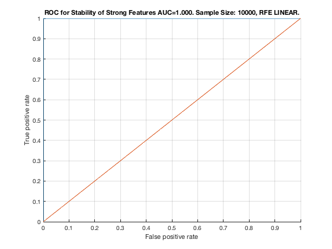

Feature Stability of RFE_LINEAR on ErrNet with 10000 samples.
unit_stability_type(10000, 2, "ErrNet")
Table 131. Feature Stability of RFE LINEAR on ErrNet with 10000 samples.
_________________________________________________________________________
SELECTED COUNTS: Strong=23, Weak=239, Irrelevant=0
TOTAL COUNTS: Strong=23, Weak=1300, Irrelevant=4
Feature_Number Stability Type Path_Length N_MBS Equivalence
______________ _________ ____________ ___________ _____ ___________
21 ' 0.992 ' ' STRONG ' 1 0 21
23 ' 0.992 ' ' STRONG ' 3 0 21
22 ' 0.988 ' ' STRONG ' 2 0 21
20 ' 0.948 ' ' STRONG ' 3 0 18
19 ' 0.942 ' ' STRONG ' 2 0 18
18 ' 0.940 ' ' STRONG ' 1 0 18
1 ' 0.870 ' ' STRONG ' 1 0 1
4 ' 0.864 ' ' STRONG ' 4 0 1
5 ' 0.852 ' ' STRONG ' 3 0 1
3 ' 0.848 ' ' STRONG ' 4 0 1
2 ' 0.846 ' ' STRONG ' 2 0 1
6 ' 0.842 ' ' STRONG ' 3 0 1
14 ' 0.752 ' ' STRONG ' 3 0 12
16 ' 0.744 ' ' STRONG ' 2 0 12
12 ' 0.736 ' ' STRONG ' 1 0 12
15 ' 0.736 ' ' STRONG ' 3 0 12
13 ' 0.730 ' ' STRONG ' 2 0 12
17 ' 0.726 ' ' STRONG ' 4 0 12
10 ' 0.716 ' ' STRONG ' 4 324 7
7 ' 0.698 ' ' STRONG ' 1 648 7
11 ' 0.692 ' ' STRONG ' 4 972 7
9 ' 0.680 ' ' STRONG ' 3 1296 7
8 ' 0.678 ' ' STRONG ' 2 1620 7
616 ' 0.084 ' ' weak ' 4 1620 39
434 ' 0.078 ' ' weak ' 4 1620 39
642 ' 0.076 ' ' weak ' 4 1620 39
891 ' 0.076 ' ' weak ' 5 1620 28
148 ' 0.072 ' ' weak ' 4 1620 39
746 ' 0.072 ' ' weak ' 4 1620 39
772 ' 0.072 ' ' weak ' 4 1620 39
917 ' 0.072 ' ' weak ' 5 1620 28
278 ' 0.070 ' ' weak ' 4 1620 39
408 ' 0.070 ' ' weak ' 4 1620 39
694 ' 0.070 ' ' weak ' 4 1620 39
1214 ' 0.070 ' ' weak ' 4 1620 39
460 ' 0.068 ' ' weak ' 4 1620 39
1255 ' 0.068 ' ' weak ' 5 1620 28
70 ' 0.064 ' ' weak ' 4 1620 39
839 ' 0.064 ' ' weak ' 5 1620 28
1162 ' 0.064 ' ' weak ' 4 1620 39
787 ' 0.062 ' ' weak ' 5 1620 28
122 ' 0.060 ' ' weak ' 4 1620 39
1047 ' 0.060 ' ' weak ' 5 1620 28
174 ' 0.056 ' ' weak ' 4 1620 39
189 ' 0.056 ' ' weak ' 5 1620 28
553 ' 0.056 ' ' weak ' 5 1620 28
876 ' 0.056 ' ' weak ' 4 1620 39
1021 ' 0.056 ' ' weak ' 5 1620 28
449 ' 0.052 ' ' weak ' 5 1620 28
564 ' 0.052 ' ' weak ' 4 1620 39
657 ' 0.052 ' ' weak ' 5 1620 28
850 ' 0.052 ' ' weak ' 4 1620 39
371 ' 0.050 ' ' weak ' 5 1620 28
111 ' 0.048 ' ' weak ' 5 1620 28
475 ' 0.048 ' ' weak ' 5 1620 28
226 ' 0.046 ' ' weak ' 4 1620 39
461 ' 0.046 ' ' weak ' 3 1620 40
1281 ' 0.046 ' ' weak ' 5 1620 28
319 ' 0.044 ' ' weak ' 5 1620 28
345 ' 0.044 ' ' weak ' 5 1620 28
423 ' 0.044 ' ' weak ' 5 1620 28
501 ' 0.044 ' ' weak ' 5 1620 28
735 ' 0.044 ' ' weak ' 5 1620 28
928 ' 0.044 ' ' weak ' 4 1620 39
709 ' 0.042 ' ' weak ' 5 1620 28
813 ' 0.042 ' ' weak ' 5 1620 28
943 ' 0.042 ' ' weak ' 5 1620 28
1058 ' 0.042 ' ' weak ' 4 1620 39
137 ' 0.040 ' ' weak ' 5 1620 28
409 ' 0.040 ' ' weak ' 3 1620 40
527 ' 0.040 ' ' weak ' 5 1620 28
631 ' 0.040 ' ' weak ' 5 1620 28
720 ' 0.040 ' ' weak ' 4 1620 39
969 ' 0.040 ' ' weak ' 5 1620 28
97 ' 0.038 ' ' weak ' 3 1620 40
267 ' 0.038 ' ' weak ' 5 1620 28
330 ' 0.038 ' ' weak ' 4 1620 39
397 ' 0.038 ' ' weak ' 5 1620 28
486 ' 0.038 ' ' weak ' 4 1620 39
579 ' 0.038 ' ' weak ' 5 1620 28
980 ' 0.038 ' ' weak ' 4 1620 39
1032 ' 0.038 ' ' weak ' 4 1620 39
1084 ' 0.038 ' ' weak ' 4 1620 39
1307 ' 0.038 ' ' weak ' 5 1620 28
241 ' 0.036 ' ' weak ' 5 1620 28
163 ' 0.034 ' ' weak ' 5 1620 28
1125 ' 0.034 ' ' weak ' 5 1620 28
1177 ' 0.034 ' ' weak ' 5 1620 28
1292 ' 0.034 ' ' weak ' 4 1620 39
538 ' 0.032 ' ' weak ' 4 1620 39
761 ' 0.032 ' ' weak ' 5 1620 28
902 ' 0.032 ' ' weak ' 4 1620 39
903 ' 0.032 ' ' weak ' 3 1620 40
1006 ' 0.032 ' ' weak ' 4 1620 39
252 ' 0.030 ' ' weak ' 4 1620 39
954 ' 0.030 ' ' weak ' 4 1620 39
995 ' 0.030 ' ' weak ' 5 1620 28
1188 ' 0.030 ' ' weak ' 4 1620 39
1229 ' 0.030 ' ' weak ' 5 1620 28
1240 ' 0.030 ' ' weak ' 4 1620 39
96 ' 0.028 ' ' weak ' 4 1620 39
865 ' 0.028 ' ' weak ' 5 1620 28
1073 ' 0.028 ' ' weak ' 5 1620 28
1163 ' 0.028 ' ' weak ' 3 1620 40
1203 ' 0.028 ' ' weak ' 5 1620 28
149 ' 0.026 ' ' weak ' 3 1620 40
200 ' 0.026 ' ' weak ' 4 1620 39
201 ' 0.024 ' ' weak ' 3 1620 40
643 ' 0.024 ' ' weak ' 3 1620 40
668 ' 0.024 ' ' weak ' 4 1620 39
695 ' 0.024 ' ' weak ' 3 1620 40
747 ' 0.024 ' ' weak ' 3 1620 40
1059 ' 0.024 ' ' weak ' 3 1620 40
1111 ' 0.024 ' ' weak ' 3 1620 40
1136 ' 0.024 ' ' weak ' 4 1620 39
1266 ' 0.024 ' ' weak ' 4 1620 39
279 ' 0.022 ' ' weak ' 3 1620 40
304 ' 0.022 ' ' weak ' 4 1620 39
305 ' 0.022 ' ' weak ' 3 1620 40
331 ' 0.022 ' ' weak ' 3 1620 40
1099 ' 0.022 ' ' weak ' 5 1620 28
1318 ' 0.022 ' ' weak ' 4 1620 39
356 ' 0.020 ' ' weak ' 4 1620 39
539 ' 0.020 ' ' weak ' 3 1620 40
590 ' 0.020 ' ' weak ' 4 1620 39
215 ' 0.018 ' ' weak ' 5 1620 28
293 ' 0.018 ' ' weak ' 5 1620 28
435 ' 0.018 ' ' weak ' 3 1620 40
605 ' 0.018 ' ' weak ' 5 1620 28
617 ' 0.018 ' ' weak ' 3 1620 40
824 ' 0.018 ' ' weak ' 4 1620 39
1267 ' 0.018 ' ' weak ' 3 1620 40
28 ' 0.016 ' ' weak ' 5 1620 28
85 ' 0.016 ' ' weak ' 5 1620 28
123 ' 0.016 ' ' weak ' 3 1620 40
227 ' 0.016 ' ' weak ' 3 1620 40
487 ' 0.016 ' ' weak ' 3 1620 40
683 ' 0.016 ' ' weak ' 5 1620 28
825 ' 0.016 ' ' weak ' 3 1620 40
929 ' 0.016 ' ' weak ' 3 1620 40
1241 ' 0.016 ' ' weak ' 3 1620 40
382 ' 0.014 ' ' weak ' 4 1620 39
512 ' 0.014 ' ' weak ' 4 1620 39
1110 ' 0.014 ' ' weak ' 4 1620 39
39 ' 0.012 ' ' weak ' 4 1620 39
59 ' 0.012 ' ' weak ' 5 1620 28
253 ' 0.012 ' ' weak ' 3 1620 40
798 ' 0.012 ' ' weak ' 4 1620 39
955 ' 0.012 ' ' weak ' 3 1620 40
981 ' 0.012 ' ' weak ' 3 1620 40
1151 ' 0.012 ' ' weak ' 5 1620 28
1293 ' 0.012 ' ' weak ' 3 1620 40
71 ' 0.010 ' ' weak ' 3 1620 40
357 ' 0.010 ' ' weak ' 3 1620 40
877 ' 0.010 ' ' weak ' 3 1620 40
1007 ' 0.010 ' ' weak ' 3 1620 40
1033 ' 0.010 ' ' weak ' 3 1620 40
1189 ' 0.010 ' ' weak ' 3 1620 40
511 ' 0.008 ' ' weak ' 5 1620 38
557 ' 0.008 ' ' weak ' 8 1620 32
591 ' 0.008 ' ' weak ' 3 1620 40
721 ' 0.008 ' ' weak ' 3 1620 40
901 ' 0.008 ' ' weak ' 5 1620 38
1207 ' 0.008 ' ' weak ' 8 1620 32
89 ' 0.006 ' ' weak ' 8 1620 32
175 ' 0.006 ' ' weak ' 3 1620 40
1103 ' 0.006 ' ' weak ' 8 1620 32
1132 ' 0.006 ' ' weak ' 7 1620 35
1215 ' 0.006 ' ' weak ' 3 1620 40
69 ' 0.004 ' ' weak ' 5 1620 38
147 ' 0.004 ' ' weak ' 5 1620 38
173 ' 0.004 ' ' weak ' 5 1620 38
225 ' 0.004 ' ' weak ' 5 1620 38
248 ' 0.004 ' ' weak ' 7 1620 35
329 ' 0.004 ' ' weak ' 5 1620 38
433 ' 0.004 ' ' weak ' 5 1620 38
453 ' 0.004 ' ' weak ' 8 1620 32
513 ' 0.004 ' ' weak ' 3 1620 40
562 ' 0.004 ' ' weak ' 6 1620 37
565 ' 0.004 ' ' weak ' 3 1620 40
583 ' 0.004 ' ' weak ' 8 1620 32
589 ' 0.004 ' ' weak ' 5 1620 38
661 ' 0.004 ' ' weak ' 8 1620 32
664 ' 0.004 ' ' weak ' 7 1620 35
851 ' 0.004 ' ' weak ' 3 1620 40
953 ' 0.004 ' ' weak ' 5 1620 38
1002 ' 0.004 ' ' weak ' 7 1620 35
1102 ' 0.004 ' ' weak ' 9 1620 31
1161 ' 0.004 ' ' weak ' 5 1620 38
1265 ' 0.004 ' ' weak ' 5 1620 38
38 ' 0.002 ' ' weak ' 5 1620 38
40 ' 0.002 ' ' weak ' 3 1620 40
72 ' 0.002 ' ' weak ' 3 1620 41
92 ' 0.002 ' ' weak ' 7 1620 35
166 ' 0.002 ' ' weak ' 9 1620 31
193 ' 0.002 ' ' weak ' 8 1620 32
199 ' 0.002 ' ' weak ' 5 1620 38
202 ' 0.002 ' ' weak ' 3 1620 41
208 ' 0.002 ' ' weak ' 4 1620 51
219 ' 0.002 ' ' weak ' 8 1620 32
245 ' 0.002 ' ' weak ' 8 1620 32
251 ' 0.002 ' ' weak ' 5 1620 38
300 ' 0.002 ' ' weak ' 7 1620 35
303 ' 0.002 ' ' weak ' 5 1620 38
323 ' 0.002 ' ' weak ' 8 1620 32
338 ' 0.002 ' ' weak ' 4 1620 51
348 ' 0.002 ' ' weak ' 9 1620 31
383 ' 0.002 ' ' weak ' 3 1620 40
416 ' 0.002 ' ' weak ' 4 1620 51
430 ' 0.002 ' ' weak ' 7 1620 35
442 ' 0.002 ' ' weak ' 4 1620 51
459 ' 0.002 ' ' weak ' 5 1620 38
468 ' 0.002 ' ' weak ' 4 1620 51
479 ' 0.002 ' ' weak ' 8 1620 32
485 ' 0.002 ' ' weak ' 5 1620 38
488 ' 0.002 ' ' weak ' 3 1620 41
560 ' 0.002 ' ' weak ' 7 1620 35
566 ' 0.002 ' ' weak ' 3 1620 41
598 ' 0.002 ' ' weak ' 4 1620 51
609 ' 0.002 ' ' weak ' 8 1620 32
612 ' 0.002 ' ' weak ' 7 1620 35
618 ' 0.002 ' ' weak ' 3 1620 41
666 ' 0.002 ' ' weak ' 6 1620 37
669 ' 0.002 ' ' weak ' 3 1620 40
696 ' 0.002 ' ' weak ' 3 1620 41
722 ' 0.002 ' ' weak ' 3 1620 41
745 ' 0.002 ' ' weak ' 5 1620 38
764 ' 0.002 ' ' weak ' 9 1620 31
765 ' 0.002 ' ' weak ' 8 1620 32
773 ' 0.002 ' ' weak ' 3 1620 40
797 ' 0.002 ' ' weak ' 5 1620 38
799 ' 0.002 ' ' weak ' 3 1620 40
817 ' 0.002 ' ' weak ' 8 1620 32
849 ' 0.002 ' ' weak ' 5 1620 38
875 ' 0.002 ' ' weak ' 5 1620 38
884 ' 0.002 ' ' weak ' 4 1620 51
895 ' 0.002 ' ' weak ' 8 1620 32
956 ' 0.002 ' ' weak ' 3 1620 41
976 ' 0.002 ' ' weak ' 7 1620 35
979 ' 0.002 ' ' weak ' 5 1620 38
982 ' 0.002 ' ' weak ' 3 1620 41
1005 ' 0.002 ' ' weak ' 5 1620 38
1031 ' 0.002 ' ' weak ' 5 1620 38
1034 ' 0.002 ' ' weak ' 3 1620 41
1051 ' 0.002 ' ' weak ' 8 1620 32
1066 ' 0.002 ' ' weak ' 4 1620 51
1075 ' 0.002 ' ' weak ' 10 1620 30
1077 ' 0.002 ' ' weak ' 8 1620 32
1082 ' 0.002 ' ' weak ' 6 1620 37
1085 ' 0.002 ' ' weak ' 3 1620 40
1092 ' 0.002 ' ' weak ' 4 1620 51
1108 ' 0.002 ' ' weak ' 6 1620 37
1134 ' 0.002 ' ' weak ' 6 1620 37
1137 ' 0.002 ' ' weak ' 3 1620 40
1138 ' 0.002 ' ' weak ' 3 1620 41
1187 ' 0.002 ' ' weak ' 5 1620 38
1213 ' 0.002 ' ' weak ' 5 1620 38
1238 ' 0.002 ' ' weak ' 6 1620 37
1291 ' 0.002 ' ' weak ' 5 1620 38
1311 ' 0.002 ' ' weak ' 8 1620 32
1319 ' 0.002 ' ' weak ' 3 1620 40
1326 ' 0.002 ' ' weak ' 4 1620 51
Figure 131. ROC for Stability of Strong Features AUC=1.000. Sample Size: 10000, RFE LINEAR.
____________________________________________________________________________________________
